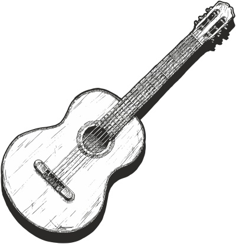
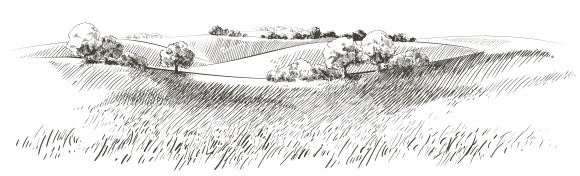
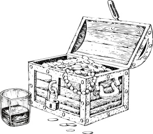
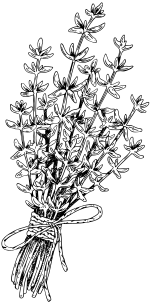

Bard Songbook
An example project
A set of a few non-copyrighted songs.
Danny Boy
English ballad
G7 Oh Danny C Boy, the pipes, the C7 pipes are F calling
From glen toC glen, and Em down the F mountain G7 side
The summer’sC gone, and all the C7 flowers are F dying
‘Tis you, ’tisC you must Dm go and G7 I must C bide. G7 But come ye Am back when F summer’s G7 in the C meadow
Or when theAm valley’s F hushed and Em white with D7 snow G7
‘Tis I’ll beC here in F sunshine or in C sha Am dow.
Oh DannyC Boy, oh Danny F Boy, I G7 love you C so. - And if you come, when all the flowers are dying
And I am dead, as dead I well may be
You’ll come and find the place where I am lying
And kneel and say an ”Ave” there for me. - And I shall hear, though soft you tread above me
And all my dreams will warm and sweeter be
If you’ll not fail to tell me that you love me
I’ll sleep in peace until you come to me.

Handsome Molly
U.S. Old-time
G I wish I was in London
Or some other seaportD town D I'd step my foot on a steamboat
And sail the oceanG round - While sailing round the ocean
While sailing round the sea
I’d think of Handsome Molly
Wherever she may be - I went to church last Sunday
She passed me on by
I knew her mind was changing
By the roving of her eye - Her hair as black as a Raven’s
Her eyes were black as coal
Her teeth just like lilies
Out in the morning cold - Now do you remember Molly
When you gave me your right hand
Said if you ever married
Then I’d be the man - Now you’ve broke your promise
Go marry whom you please
My heart is broken
‘Til I get some ease
Whiskey in the Jar
Irish traditional
- As
C I was a goin' over
TheAm far famed Kerry mountains
IF met with Captain Farrell and his C Money he was counting C I first produced my pistol
And IAm then produced my rapier
SayingF "Stand and deliver,
ForC you are a bold deceiver!" - Mush-a
G ring dum-a do dum-a da C Whack for me daddy-o F Whack for me daddy-o
There'sC whiskey G in the C jar - I counted out his money
And it made a pretty penny
I put it in me pocket
And I took it home to Jenny
She sighed and she swore
That she never would deceive me
But the devil take the women
For they never can be easy
Ch. - I went up to my chamber
All for to take a slumber
I dreamt of gold and jewels
And for sure 't was no wonder
But Jenny drew me charges
And she filled them up with water
Then sent for captain Farrell
To be ready for the slaughter
Ch. - 'Twas early in the morning
Just before I rose to travel
Up comes a band of footmen
And likewise captain Farrell
I first produced me pistol
For she stole away me rapier
I couldn't shoot the water
So a prisoner I was taken
Ch.

Wild Mountain Thyme
Irish & Scottish traditional
- O' the
G summer C time G has come
And theC trees are sweetly G bloomin'
And theC wild G mountain Em thyme
GrowsC around the Am bloomin' C heather
Will yeG go C lassie G go? - And we'll
C all go G together to pull C wild G mountain Em thyme
AllC around the Am bloomin' C heather, will ye G go C lassie G go? - I will build my love a bower
By yon cool crystal fountain 
And round it I will pile
All the wild flowers o' the mountain.
Will ye go lassie go? Ch. - I will range through the wilds
And the deep glen sae dreamy
And return wi' their spoils
Tae the bower o' my dearie.
Will ye go lassie go? Ch. - If my true love she'll not come
Then I'll surely find another
To pull wild mountain thyme
All around the bloomin' heather.
Will ye go lassie go? Ch.